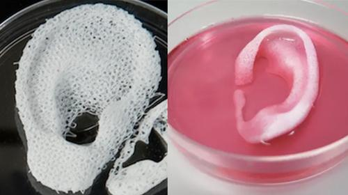

2017-01-31
Maker's Notebook #1
Find an article (print or online) that describes a real-world application of 3D printing. Write a brief summary of the article in your Makers Journal. You MUST include a proper citation!
Medical Application of 3D Printing
3D Bioprinting of Tissues and Organs doi:10.1038/nbt.2958
Murphy, Sean V; Atala, Anthony.
Nature Biotechnology
Response: 3D bioprinting works by using the printer to create a scaffold structure to support cell growth, and then pipetting cells onto the scaffold to begin the process of organ formation.
2017-01-31
Maker's Notebook #1
Prompt: It is the year 4022; all of the ancient country of Usa has been buried under many feet of detritus from a catastrophe that occurred back in 2016. You are an amateur archeologist who stumbles upon a burial chamber. In it you find a number of objects. Select one and describe it. Knowing nothing about the ancient civilization of Usa, how do you think this object was used?
Object: Stylized stereo speakers with 3.5mm input
Note, there are two of these connected together


Response: Within the burial chamber, amongst a variety of other curiosities, was this pair of red and silver stylized flowers. They were connected together via a long cable ending in a metallic point about 3.5 mm in diameter. I suspect that the ancients may have used this device as a censer for diffusal of ceremonial incense; the pointed 'stem' of each 'flower' can be removed to reveal a small aperture through which I believe aromatic flowers and leaves could be inserted and lit, whereupon after sealing the censer aperture once more, the smoke would diffuse out of the metal mesh 'petals' as the censer is swung back and forth.